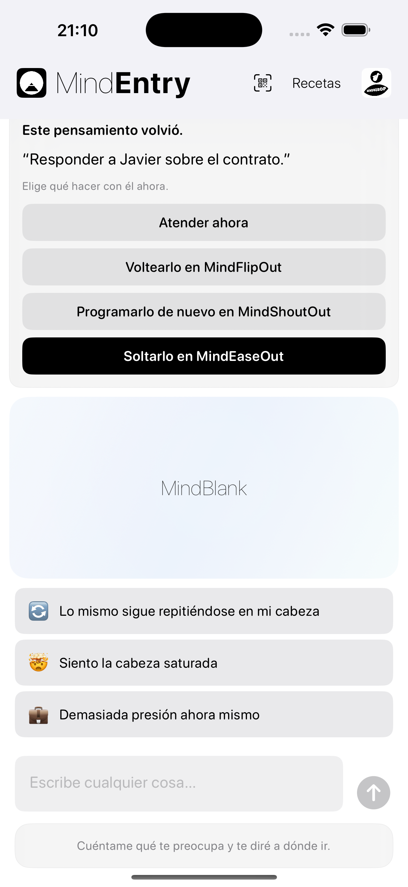
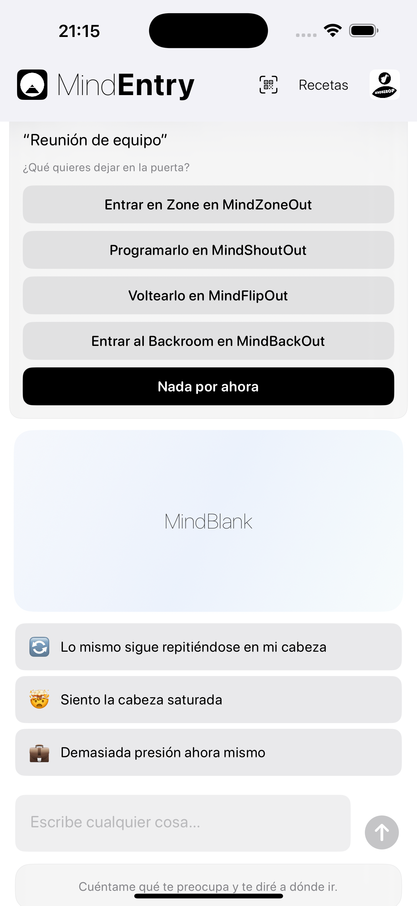

Una sugerencia discreta antes de que aparezca la fricción mental.
MindPreCog es la capa sensible al contexto de MINDBEBOP.
Cuando un recordatorio vuelve a aparecer, comienza la mañana, se acerca la hora de dormir, está a punto de empezar una reunión, surge una situación familiar, o empieza a formarse un patrón recurrente, MindPreCog detecta esos momentos significativos y patrones repetidos, y ofrece la vía estructural más adecuada.
En lugar de esperar a que te des cuenta de que necesitas ayuda, MindPreCog acerca suavemente la herramienta adecuada en el momento adecuado.
Sin análisis. Sin interpretaciones. Sin diagnósticos. Solo una invitación oportuna para reducir la fricción mental antes de que aumente.
La mayoría de las aplicaciones esperan a que pidas ayuda. MindPreCog ofrece estructura antes de que pienses en pedirla.
Estos momentos se convierten en oportunidades discretas para responder de una manera diferente.
Sugerencias sensibles al contexto, no lectura de pensamientos.
MindPreCog no analiza tus pensamientos.
En su lugar, responde a señales simples como:
Cuando ocurre uno de estos momentos, MindEntry puede abrirse y ofrecer el siguiente paso más relevante.
Puede significar hacer Shout de un pensamiento, hacer Flip, volver a programarlo, entrar en Backroom, hacer Zone, hacer Release, crear una receta, iniciar un CogniHack, o simplemente no hacer nada.
Por la mañana, MindEntry puede preguntar:
¿Qué merece tu atención hoy?
A la hora de dormir, MindEntry puede preguntar:
¿Hay algo que quieras dejar a un lado hasta mañana?
Antes de una reunión, MindEntry puede preguntar:
¿Hay algo que quieras dejar fuera antes de entrar?
Cuando el mismo recordatorio ha sido reprogramado varias veces:
Este recordatorio sigue reapareciendo.
MindEntry puede ofrecer opciones como MindShoutOut, MindFlipOut, MindZoneOut, MindBackOut, una receta, un CogniHack, o simplemente no hacer nada.
Una pequeña cantidad de fricción mental se elimina antes de que tenga la oportunidad de crecer.
Observación discreta, no analítica.
MindPreCog puede detectar ocasionalmente cuando un recordatorio, una receta, una distracción, una situación o una secuencia aparece repetidamente con el tiempo.
Puede tratarse de un recordatorio que reaparece una y otra vez, una receta utilizada repetidamente, una distracción recurrente, o una secuencia familiar que aparece a través de varias herramientas de MINDBEBOP.
No se generan informes. No se calculan puntuaciones. No se evalúa el comportamiento.
En su lugar, MindPreCog puede mostrar ocasionalmente un mensaje sencillo:
Este patrón sigue repitiéndose.
El objetivo no es analizar. El objetivo es ayudar a que la fricción recurrente encuentre una estructura antes de que siga reapareciendo.
MindPreCog simplemente detecta momentos significativos y patrones recurrentes, y ofrece estructura cuando puede resultar útil.


Los avisos de MindPreCog se muestran dentro de MindEntry.
Con el tiempo, MindPreCog puede ampliarse para incluir más avisos sensibles al contexto y señales de patrones.
La mayoría de las herramientas mentales son reactivas.
Primero detectas un problema y después decides qué hacer.
MindPreCog reduce esa distancia.
Ofrece una opción estructural justo antes de que la fricción mental tenga la oportunidad de crecer, y puede detectar ocasionalmente patrones recurrentes antes de que se conviertan en fuentes persistentes de fricción.
MindPreCog no intenta comprender tu mente. Simplemente llega un poco antes... y a veces detecta un patrón antes que tú.
Copyright © 2026 MINDBEBOP — All rights reserved.